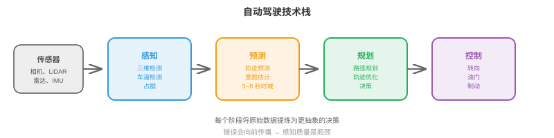
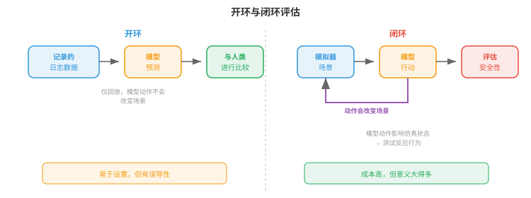
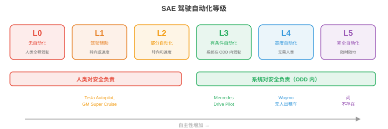

自动驾驶汽车¶
自动驾驶汽车是商业化程度最高的自主系统，将感知、预测、规划和控制集成到一辆车中。本节介绍自动驾驶技术栈、高精地图、运动预测、规划、端到端驾驶、仿真、安全标准与自动化等级。
- 自动驾驶汽车可以说是当前正在大规模攻克的最难机器人问题。工厂机器人在受控环境中工作，而自动驾驶汽车必须应对开放世界：不可预测的人类驾驶员、横穿马路的行人、一夜之间出现的施工区，以及每分钟都在变化的天气。
大白话
工厂里环境可控，路上却什么都可能发生。自动驾驶要在陌生、变化快且有人类参与的世界里持续做正确决定。
- 它的风险也格外高。自动驾驶汽车以高速公路速度在弱势道路使用者之间行驶。对于安全关键故障，允许的误差几乎为零。
大白话
车辆速度快、周围有人，错误的后果很重。这里不是“准确率差一点也没关系”的应用，系统必须把安全放在第一位。
自动驾驶技术栈¶
- 经典的自动驾驶架构是一条模块化流水线（modular pipeline），包含四个依次衔接的阶段：
大白话
自动驾驶的传统流程很清楚：先看见环境，再猜别人怎么动，然后决定自己路线，最后把路线变成方向盘和刹车命令。

- 感知（Perception）（本章第 1 节已介绍）将原始传感器数据处理为结构化场景表示：带有三维位置、速度和类别标签的检测目标；车道线；交通信号灯；可行驶区域边界。
大白话
感知负责把相机、雷达和 LiDAR 的原始信号翻成“哪里有车、人、车道和红绿灯”的结构化地图。
- 预测（Prediction）预报其他参与体（车辆、行人、骑行者）未来会如何运动。给定场景当前状态，预测模块输出各参与体在一个时间范围内的轨迹，通常是未来 3--8 秒。
大白话
预测负责提前想：前车会不会变道、行人会不会过街。它给后面的规划器留出反应时间。
- 规划（Planning）决定自车应当做什么：沿哪条路径行驶、何时变道、何时让行、何时加速或制动。它接收预测后的场景，并生成一条安全、舒适且朝目的地推进的自车轨迹。
大白话
规划是决策层：综合道路规则、目的地和其他人的可能运动，选出自己接下来该怎样走。
- 控制（Control）把规划轨迹转换为执行器命令：转向角、油门和制动。这是最底层，将抽象轨迹转化为物理运动。
大白话
控制不再讨论该不该转弯，而是精确执行“方向盘转多少、油门踩多少、刹车多大”。
- 模块化设计有明确的工程优势：每个模块都可独立开发、测试和改进。但它也有弱点：错误会向下游传播（漏检对规划器不可见），而且每个接口都会损失信息（规划器看到的是边界框，而不是产生边界框的丰富传感器数据）。
大白话
分模块易排查问题，但前一环漏掉行人，后面再聪明也看不见；同时每次交接都会把丰富信息压缩掉一些。
高精地图¶
- 高精地图（High-Definition, HD maps）是精细到厘米级精度的数字地图，编码道路结构：车道边界、车道连通关系（在路口哪条车道接到哪条车道）、交通标志位置、限速、人行横道位置和路面高程。
大白话
高精地图不是普通导航图，而是把车道线、路口连接和标志位置都精确记下来的道路底稿。
- 高精地图为驾驶任务提供了强先验。感知模块不必每一帧都从零发现车道边界；它只需在地图中定位车辆，并确认现实与已存储的结构相符。这会大幅简化规划。
大白话
有地图时，车辆已经知道道路大概结构，只需核对现场有没有变化。这样看车道和做规划都轻松很多。
- 构建高精地图需要配备高端激光雷达（LiDAR）、相机和 RTK-GPS 的专用测绘车辆。道路变化时，地图还必须维护和更新。这很昂贵，也难以扩展到地球上的每一条道路。
大白话
高精地图好用但贵：每条路都要精测，施工或改道后还要重新维护，规模扩大后成本很高。
- 无地图驾驶（Mapless driving），也称“在线建图（online mapping）”，旨在消除对预建高精地图的依赖。车辆改为从传感器实时构建局部地图。MapTR、MapTRv2 等模型使用 Transformer 架构，直接从相机图像预测矢量化地图元素（车道中心线、道路边界、人行横道），并以有序点序列形式输出折线。
大白话
无地图方案让车辆边开边理解当前道路，不必等地图先铺好。它更易覆盖新地方，但更依赖实时感知足够可靠。
- 无地图方法以地图精度换取可扩展性：车辆能驶过的任何道路都能建图。但这要求感知系统足够鲁棒，能实时检测全部相关道路结构，复杂路口、高速匝道和施工区也不例外。
大白话
不靠预建地图意味着哪里都能去，但每一次都必须现场看对。路况最复杂的时候，也正是这种方案压力最大的时候。
- 实践中，许多系统采用混合方法：以带有粗粒度道路拓扑的轻量地图（来自现有地图提供商）为基础，再由车辆传感器实时补充。
大白话
混合方案先用普通地图知道大方向，再用车上感知补车道和临时变化，兼顾覆盖范围与可靠性。
运动预测¶
- 预测其他道路使用者会去往何处，是自动驾驶中最难的子问题之一。人不可预测，意图不可见，而可能的未来会迅速分叉。
大白话
最难的不是看见别人在哪，而是知道他们下一秒想干什么。人可能突然转弯、停车或横穿，未来本来就不止一种。
- 预测模型的输入是场景上下文（scene context）：最近一段时间内（通常 1--2 秒历史）全部检测参与体的位置和速度，以及静态上下文（车道几何、交通信号、道路边界）。
大白话
预测不只看当前一帧，还要看最近怎么动，以及道路、信号灯允许往哪走，才能做出合理推断。
- 输出是每个参与体的一组预测轨迹（predicted trajectories），通常覆盖未来 3--8 秒。未来存在不确定性，因此好的预测模型会输出多条带有关联概率的可能轨迹，而不是单点估计。
大白话
好预测不会装作未来唯一确定，而会给出多个可能走向和把握程度，让规划器对每种风险都留余地。
- 将轨迹预测（trajectory forecasting）视为回归问题：预测每个参与体在离散未来时间步的 \((x, y)\) 坐标。损失通常是在 \(K\) 条预测轨迹上的最小平均位移误差（minADE）：
大白话
模型一次给多条未来轨迹，minADE 只看其中最接近真实的一条。这鼓励模型把不同可能性都覆盖到。
- 这是“\(K\) 选最佳”指标：只要 \(K\) 条预测中任一条接近真实值，模型就能得分。它鼓励多样化、多模态预测。
大白话
指标认可“我不确定，但我把正确可能性列出来了”。这比只押一条轨迹更符合真实交通的不确定性。
- 社会力（social forces）把行人行为建模为一个动力系统：每个人受到吸引力（指向自身目标）和排斥力（远离其他行人与障碍物）。第 \(i\) 个人的加速度为：
大白话
社会力模型把人看成既想朝目的地走、又会躲开别人和墙的粒子，用几个力的合成来模拟群体移动。
- 这是一个微分方程组，与本章第 2 节的机器人动力学方程相似。该模型很优雅，但依赖手工调节的力参数，且难以处理复杂的多参与体交互。
大白话
这种模型直观但规则很简化。真实人会犹豫、示意、抢行，靠固定吸引力和排斥力很难完整描述。
- 用于预测的图神经网络（Graph Neural Networks, GNNs）把场景建模为图：每个参与体是一个节点，边表示空间关系（邻近、共用车道）。节点间的消息传递捕捉交互关系，例如“这辆车正在给那个行人让行”或“这两辆车正汇入同一条车道”。
大白话
GNN 把每辆车、每个人当成节点，让它们交换邻近和路权信息，因此能理解“谁在让谁、谁会冲突”。
- 现代预测架构（如 MTR、QCNet）使用基于 Transformer 的模型，同时推理参与体历史、地图上下文和参与体间交互。参与体经由交叉注意力关注相关地图特征（当前车道、即将到来的路口）和其他参与体（前车、人行横道上的行人）。输出是一组通过自回归方式或混合模型生成的轨迹假设。
大白话
Transformer 让每个参与体同时参考自己的历史、道路结构和关键邻居，再生成多条未来假设，适合复杂路口等交互场景。
- 目标条件预测（goal-conditioned prediction）先预测参与体可能去往哪里，即一组候选目标点，如车道终点或路口出口；再预测达到每个目标的轨迹。它把问题拆成“去哪里”（离散且可处理）和“怎么去”（给定目标时的连续路径），从而使多模态预测问题更易处理。
大白话
先猜别人可能去哪个出口或车道，再规划怎么到那里，比直接从无数曲线中猜完整轨迹更容易。
规划¶
- 给定预测后的场景，规划器必须为自车生成一条轨迹。这是一个约束优化问题：寻找一条安全、舒适、高效且合法的轨迹。
大白话
规划器不是只找最快路线，而是在不撞车、不违法、不让乘客难受的前提下尽量往目的地走。
- 基于规则的规划器（rule-based planners）将驾驶行为编码为一组 if-then 规则：“若行人在斑马线上，则让行”“若与前车的间隙小于 2 秒，则不变道”“若接近红灯，则减速并在停止线前停车”。这些规则可解释、可审计，但面对复杂场景会变得难以驾驭：规则可能数以千计，边界情况很多，规则之间还会相互作用。
大白话
规则规划器像一本极长的驾驶手册，优点是每个决定说得清；缺点是现实边界情况太多，规则容易互相打架。
- 基于优化的规划器（optimisation-based planners）把驾驶表述为轨迹优化。自车轨迹被参数化，例如表示为未来时间步 \((x, y, \theta, v)\) 状态序列，并最小化目标函数：
大白话
优化规划器同时比较很多候选轨迹，用一个总分权衡到达速度、乘坐舒适和避碰，并强制遵守车辆能力和道路边界。
- 进度项惩罚偏离期望路线；舒适性项惩罚较大的横向加速度、加加速度（jerk，速度的导数）和突兀转向，因为乘客会感受到这些；安全项借助预测轨迹评估碰撞风险，惩罚与其他参与体过近。
大白话
快速到达、平稳乘坐和安全距离常常互相冲突。代价项把这些真实取舍明确量化，让系统不能只顾赶路。
- 这就是第 3 章的约束优化：在不等式约束下最小化代价函数。权重 \(w_1, w_2, w_3\) 在相互竞争的目标之间权衡，激进驾驶更快，却更不舒适也更不安全。
大白话
权重相当于驾驶风格旋钮。把进度权重调太高，车会更激进；把安全和舒适权重调高，车会更保守和平稳。
- 基于学习的规划器（learning-based planners）使用在人类驾驶数据上训练的神经网络来生成轨迹。模型观察场景，直接输出规划轨迹，并从专家人类驾驶示例中隐式学习复杂取舍。
大白话
学习式规划不把每条驾驶经验写成规则，而是从人类驾驶记录里模仿哪些情况下该等、该让和该并线。
- 它的优点是能整体捕捉人类驾驶行为，包括那些微妙、难以形式化的方面：多激进地汇入、何时在路口缓慢向前探、应给骑行者留出多少空间。缺点与第 2 节模仿学习中的分布偏移问题相同：模型在训练数据未充分覆盖的场景中可能出现不可预测行为。
大白话
人类驾驶里有很多默会经验，学习模型更容易吸收；但没见过的场景一来，它也可能像只学过示范的学生一样不知如何应对。
端到端驾驶¶
- 端到端驾驶（end-to-end driving）彻底移除模块边界。单一神经网络接收原始传感器输入（相机图像、激光雷达点云），直接输出驾驶命令（转向、油门、制动）或规划轨迹，不再分设感知、预测和规划模块。
大白话
端到端驾驶把“看、猜、规划”合在同一网络里，直接从传感器输入得到驾驶动作或轨迹。
- 它的吸引力在于，整个系统围绕最终任务（安全驾驶）进行联合优化，因而信息不会在模块边界丢失。感知模块学习提取规划器真正需要的特征，而不是可能遗漏任务相关细节的通用目标检测结果。
大白话
统一训练让前面的视觉特征直接为最终驾驶目标服务，少了模块之间传递边界框时的信息损失。
- UniAD（Unified Autonomous Driving）是具有标志性的端到端架构。它通过 BEV 编码器处理多相机图像，再串联使用基于 Transformer 的模块：跟踪、在线建图、运动预测、占据预测和规划。虽然它有内部模块，但它们都可微，且以端到端方式联合训练，规划损失会通过整个网络反向传播。
大白话
UniAD 仍保留便于理解的内部功能，但所有部分能一起反向传播，因此最终规划失败会反过来指导前面的感知该学什么。
- UniAD 的规划模块通过关注预测的 BEV 特征、预测的参与体轨迹和预测占据，生成未来自车航点。这正是多元链式法则（第 3 章）的实际应用：梯度从规划损失一路流回图像编码器，告诉感知特征怎样才能更有利于规划。
大白话
若规划出的路线不好，训练信号会一路传回最前面的图像编码器，让它逐渐学会提供对驾驶更有用的视觉信息。
- 更新近的端到端方法使用 VLA 风格架构（本章第 3 节）。DriveVLM 等模型接收相机图像和导航指令（或路线），借助 VLM 主干生成驾驶动作。这将大规模预训练带来的视觉理解与推理能力直接带入驾驶技术栈。
大白话
DriveVLM 把驾驶也看成视觉、语言和动作联合任务，试图把大模型已有的场景理解和推理能力直接用于开车。
- 端到端驾驶的矛盾在于可解释性（interpretability）。模块化系统可以报告“我在 (x, y) 检测到一名行人，并预测其将横穿道路”，因此失效模式可诊断。端到端系统则是输出转向角的黑箱。一旦失败，很难诊断原因，这对安全认证是严重问题。
大白话
端到端能减少接口损失，却更难回答“为什么刚才转错了”。安全关键系统里，不能解释和复现故障会严重阻碍验证。
用于驾驶的世界模型¶
- 世界模型（world model）学习在当前状态与自车动作条件下预测驾驶场景的未来状态：\(p(s_{t+1} \mid s_t, a_t)\)（第 10 章已引入）。在驾驶中，这意味着生成逼真的未来帧或 BEV 布局：“若我加速并向左转向，3 秒后场景会是这样。”
大白话
驾驶世界模型让车辆先在内部预演“我这样加速或转向，几秒后周围会怎样”，再决定要不要真的执行。
- 世界模型为自动驾驶提供两项强大能力：
大白话
它一方面帮助车辆在脑中比较多个驾驶方案，另一方面能作为更接近真实数据的模拟器来做测试。
-
基于想象的规划（imagination-based planning）：规划器不必先执行一个动作再看结果，而是可以通过世界模型展开多条候选轨迹来“想象”，逐条评估安全性和舒适性，再选择最佳轨迹。这是应用于驾驶的基于模型强化学习（model-based RL，本章第 2 节）。
大白话
车辆可以先在内部比较“现在并线、稍后并线、继续跟车”的后果，再选风险最低的一条。
-
学习式仿真（learned simulation）：在真实驾驶数据上训练的世界模型，本质上是数据驱动模拟器。它无需手工构建模拟器的工作量，就能生成逼真场景，包括罕见边界情况。关键在于，它捕捉真实驾驶的统计规律：其他驾驶员实际如何驾驶、光照如何变化、下雨如何影响能见度。
大白话
从真实日志学出的模拟器可自动带上真实驾驶习惯和天气变化，有机会生成手工规则难写出的罕见情境。
- GAIA-1（Wayve）是用于驾驶的生成式世界模型。给定一段过去的相机帧和自车动作，它自回归地生成未来视频帧。它使用以动作输入为条件的视频扩散架构。车辆遵守交通规则、行人走在人行道上、信号灯正确切换等合理未来，均由训练数据涌现，而非由规则编程而来。
大白话
GAIA-1 根据过去画面和车辆动作生成未来画面，许多交通常识不是硬编码，而是从大量真实驾驶数据中学出来的。
- DriveDreamer 和 GenAD采用类似方法，但在 BEV 空间而非像素空间中运行。预测未来 BEV 布局比生成完整视频帧更紧凑，这与本章第 2 节所述的 DreamerV3 在潜在空间而非像素空间中预测相似。BEV 世界模型预测所有参与体的位置、道路结构的形态以及自由空间的位置，规划器直接使用这些结果。
大白话
在俯视语义空间预测，不必费力画出每片云和每个纹理，只保留车辆位置、道路和可通行空间等规划真正需要的信息。
- 神经闭环仿真（neural closed-loop simulation）用世界模型替代用于测试的手工模拟器。以真实驾驶日志为起点，世界模型会生成若自车采取不同动作将会发生什么。这使反事实评估成为可能，例如“若我晚 0.5 秒制动会怎样？”，而无须在物理世界重现场景。
大白话
闭环世界模型可以问“如果当时换一种操作会怎样”，不用真的在路上冒险重演危险场景。
- 这与第 10 章的 JEPA 框架自然相连。驾驶世界模型无需预测像素级完美的未来，即每个像素精确的 RGB 值；它需要预测对规划有意义的方面：参与体在哪、移动多快、自由空间在哪。嵌入空间预测（JEPA 风格）捕捉这些语义上有意义的属性，不会把能力浪费在精确云层纹理等无关视觉细节上。
大白话
对开车而言，准确知道车和人会不会进入路径，比精确画出云的纹理重要得多。JEPA 式表示把算力放在这些决策关键信息上。
- 主要挑战是长时域保真度（long-horizon fidelity）。世界模型会随时间累积误差：第 2 帧的小错误会使之后全部帧偏移。对驾驶而言，3 秒预测时域足以支撑“现在是否该并线？”等战术决策，但用于路径规划等战略决策所需的 30 秒时域仍不可靠。现有工作通过重新锚定（定期用真实观测重置模型）和不确定性估计（在预测不可靠时发出标记）缓解这一问题。
大白话
预测越长，误差越会滚大。短时间预演能辅助即时决策，但不能把几十秒后的想象当成确定事实，必须不断用真实观测校正。
仿真¶
- 让自动驾驶汽车在真实道路上行驶来测试是必要的，却不够。危险场景，如近碰撞和边界情况，十分罕见，因此按里程测试效率很低。要从统计上证明安全，一辆车需要行驶数亿英里，这不可行。
大白话
真实路测必须做，但危险情况太少。光靠累计公里数等一次罕见事故，既慢又无法证明系统真的安全。
- 仿真（simulation）提供不限次数、可控且安全的测试。现实中罕见的场景，如儿童冲入道路、爆胎或突发障碍物，可以在仿真中测试数百万次。
大白话
仿真能把罕见危险场景反复重放，还能系统改变天气、速度和障碍物位置，这是现实道路做不到的规模。
- CARLA 是建立在 Unreal Engine 上的开源驾驶模拟器，提供逼真的城市场景、动态天气、交通参与体和传感器仿真（相机、LiDAR、雷达）。研究者用 CARLA 训练基于 RL 的驾驶智能体，并评估感知算法。
大白话
CARLA 像可编程的虚拟城市，研究者能在里面安全地训练和测试车辆面对交通、天气和各种传感器条件的表现。
- nuPlan（Motional）是闭环规划基准。它不同于开环评估，后者回放记录数据并把规划器输出与人类驾驶员实际轨迹比较；闭环评估会让规划器的决策影响仿真，规划器若决定变道，仿真就会相应演化。它测试反应行为，而不仅是轨迹相似度。
大白话
nuPlan 不是只看模型像不像人类当时的路线，而是让模型真的影响后续场景，检查它能否应对自己动作带来的结果。

- 开环（open-loop）和闭环（closed-loop）评估的区别至关重要：
大白话
开环只做纸面比对，闭环才让模型真正“开起来”。对驾驶能力来说，后者更接近现实。
-
开环：回放录制的场景，计算模型输出与人类驾驶员动作的相似程度。设置简单，却可能误导人：一个总预测“直行”的模型在高速公路上误差可能很低，却会在第一个转弯处撞车。
大白话
开环模型可能在大多数直路上拿高分，却没机会暴露它遇到转弯、障碍或自己偏离后会不会失控。
-
闭环：模型动作会改变仿真状态，仿真再据此演化。它测试模型从自身错误中恢复、对动态情形做出反应的能力。成本更高，但意义也大得多。
大白话
闭环会把模型自己的决定算进环境变化，因此能检验它是否会把小错误救回来，而不是只会跟随历史答案。
- 场景生成（scenario generation）创建能给系统施压的测试用例。对抗场景，如车辆突然制动、停放车辆后方藏有行人，通过优化自动驾驶系统表现最差的情形生成。这与第 6 章机器学习中的对抗训练相关：寻找使损失最大的输入。
大白话
场景生成不是随机挑题，而是主动寻找最容易让系统出错的情况，用这些难题逼出漏洞。
安全¶
- 自动驾驶安全受工程标准约束，而不只由机器学习指标决定。
大白话
模型分数再高也不等于能上路。汽车安全还要满足系统工程标准、故障处理和可验证性要求。
- ISO 26262（功能安全，Functional Safety）是面向安全关键电子系统的汽车标准。它根据潜在危害的严重度、暴露概率和可控性，定义从 A（最低）到 D（最高）的汽车安全完整性等级（Automotive Safety Integrity Levels, ASILs）。自动驾驶系统的感知和规划组件通常为最高的 ASIL-D，要求进行广泛验证、冗余设计和失效安全设计。
大白话
ISO 26262 按事故后果和发生条件给部件划安全等级。自动驾驶核心通常要求最高等级，不能只靠“模型大概不错”。
- SOTIF（预期功能安全，Safety of the Intended Functionality，ISO 21448）处理另一类危害：不是 ISO 26262 所涵盖的硬件故障，而是系统按设计工作却仍产生不安全结果的情况。感知模型将白色卡车误判为天空（真实事件）属于 SOTIF 问题：硬件正常，算法局限却造成危害。
大白话
SOTIF 关注“硬件没坏但系统还是理解错了”的风险。算法把东西看错，同样可能出事故，不能只检查元器件是否正常。
- 运行设计域（Operational Design Domain, ODD）定义自动驾驶系统的设计运行条件：特定地理区域、道路类型（仅高速公路、城市道路或两者）、天气条件（无大雪）、速度范围和一天中的时段。不得在 ODD 外运行：系统若无法处理下雪，就不能在雪天驾驶。
大白话
ODD 是系统能力边界说明书。它只承诺在规定地点、天气和速度范围内工作，超出范围就必须退出或交给人类。
- 失效安全（fail-safe）与失效运行（fail-operational）设计：
大白话
出故障后有两种目标：最低限度是安全停下，更高要求是在单点故障下仍能继续安全完成处置。
-
失效安全：检测到故障时，系统转换到安全状态，例如靠边停车。这是最低要求。
大白话
发现不能可靠驾驶时，车辆不再硬撑，而是采取最安全的降级动作，例如减速靠边。
-
失效运行：即便发生故障，系统仍借助冗余组件继续安全运行。具有冗余转向、制动和计算平台的自动驾驶汽车，能在单个组件失效后仍驶往安全地点。
大白话
失效运行依赖备份部件接管，让单个传感器或计算机坏掉后车辆仍能安全到达处置地点。
- 冗余（redundancy）是基础。关键感知传感器会重复配置：多个相机覆盖重叠视野，LiDAR 与雷达都提供独立的深度测量，两个计算平台运行同一软件。任何单个组件失效时，其他组件仍能提供足够信息以安全驾驶。
大白话
冗余不是简单多装几个设备，而是确保一个关键部件失效时，仍有独立路径能看见、计算并把车安全带走。
自动化等级¶

- SAE J3016 标准定义六个驾驶自动化等级，从 0（无自动化）到 5（完全自动化）：
大白话
自动化等级的关键不只是功能多不多，而是系统在什么范围内替代人，以及出问题时谁必须负责接管。
-
第 0 级（无自动化，No Automation）：人类承担全部驾驶工作。系统可以提供警告，如车道偏离提醒，但不控制车辆。
大白话
L0 只有提醒功能，开车、观察和负责都完全由人承担。
-
第 1 级（驾驶员辅助，Driver Assistance）：系统控制转向或速度中的一项，但不能同时控制两项。自适应巡航控制（维持车速与跟车距离）或车道保持辅助（让车辆保持在车道中央）属于第 1 级。
大白话
L1 能帮一件事，例如跟车或扶方向盘，但人仍要负责另一件事和整体驾驶。
-
第 2 级（部分自动化，Partial Automation）：系统同时控制转向和速度，但人类必须始终监控，并准备接管。Tesla Autopilot、GM Super Cruise 及大多数当前所谓“自动驾驶”功能均属第 2 级。人类仍是负责驾驶员。
大白话
L2 虽然能同时控方向和速度，驾驶员仍必须持续盯路并随时接管，责任没有转给系统。
-
第 3 级（有条件自动化，Conditional Automation）：系统驾驶并监控环境，但仅在特定条件，即 ODD 内。人类可以脱离驾驶任务，但必须在系统请求时准备接管，通常有 10 秒以上的时间缓冲。Mercedes Drive Pilot（在特定高速公路、低于 60 km/h 时）是首个获认证的第 3 级系统。
大白话
L3 在限定条件内由系统负责看路和驾驶，人可以暂时不盯路，但系统叫你接管时仍要能回来接手。
-
第 4 级（高度自动化，High Automation）：系统在其 ODD 内驾驶并处理全部情形，无需人类干预。遇到 ODD 外情况时，系统能自行安全停车。Waymo 的无人出租车服务在特定地理区域以第 4 级运行。
大白话
L4 在自己的限定区域内不需要人类接管，离开能力范围时也必须自己安全处置，不把问题抛给乘客。
-
第 5 级（完全自动化，Full Automation）：系统在任何条件下都能在任何人类能驾驶的地方行驶，不需要方向盘或踏板。它尚不存在。
大白话
L5 是任何道路、任何天气都完全自己开，不需要驾驶位的人类能力。目前还没有这样的系统。
- 关键区别在于谁对安全负责。在第 0--2 级，人类负责；在第 3--5 级，系统在其 ODD 内负责。这会带来深远的法律、保险与伦理影响。
大白话
真正的分界线是责任归谁：L2 以下人负责，L3 以上在规定运行范围内由系统负责，这直接影响法律和保险。
- 当前行业同时存在广泛部署的第 2 级、刚开始部署的第 3 级，以及地理范围有限的第 4 级。第 5 级仍是长期研究目标。
大白话
市面上大多仍是需要人盯着的 L2；真正不需要人接管的 L4 只在有限区域运行，L5 还没有落地。
编程任务（使用 CoLab 或 Notebook）¶
-
实现一个简单的轨迹优化规划器。给定起点、目标和一个障碍物，使用梯度下降找出最平滑的无碰撞路径。
import jax import jax.numpy as jnp import matplotlib.pyplot as plt # Trajectory: N waypoints, each (x, y) N = 20 start = jnp.array([0.0, 0.0]) goal = jnp.array([10.0, 0.0]) obstacle = jnp.array([5.0, 0.0]) obs_radius = 1.5 # Initialise: straight line from start to goal waypoints_init = jnp.linspace(start, goal, N) def cost(waypoints): wp = jnp.concatenate([start[None], waypoints, goal[None]], axis=0) # Smoothness: penalise acceleration (second differences) accel = wp[2:] - 2 * wp[1:-1] + wp[:-2] smooth_cost = jnp.sum(accel ** 2) # Obstacle avoidance: penalise proximity dists = jnp.linalg.norm(wp - obstacle, axis=1) collision_cost = jnp.sum(jnp.maximum(0, obs_radius + 0.5 - dists) ** 2) return 10 * smooth_cost + 100 * collision_cost grad_cost = jax.grad(cost) # Optimise the interior waypoints waypoints = waypoints_init[1:-1] lr = 0.01 for _ in range(500): g = grad_cost(waypoints) waypoints = waypoints - lr * g # Plot full_path = jnp.concatenate([start[None], waypoints, goal[None]], axis=0) theta = jnp.linspace(0, 2 * jnp.pi, 100) plt.figure(figsize=(10, 4)) plt.plot(full_path[:, 0], full_path[:, 1], "b.-", label="Optimised path") plt.plot(waypoints_init[:, 0], waypoints_init[:, 1], "r--", alpha=0.5, label="Initial (straight)") plt.fill(obstacle[0] + obs_radius * jnp.cos(theta), obstacle[1] + obs_radius * jnp.sin(theta), alpha=0.3, color="red", label="Obstacle") plt.plot(*start, "go", markersize=10); plt.plot(*goal, "g*", markersize=15) plt.legend(); plt.axis("equal"); plt.grid(True) plt.title("Trajectory Optimisation: Smooth Collision-Free Path") plt.show() -
模拟一个恒定速度运动预测模型，并将其结果与转弯车辆的真实轨迹比较。
import jax.numpy as jnp import matplotlib.pyplot as plt # Ground truth: vehicle turning right dt = 0.1 T = 40 # 4 seconds v = 10.0 # m/s omega = 0.3 # rad/s (turning rate) # True trajectory (constant turn rate) t = jnp.arange(T) * dt theta = omega * t gt_x = (v / omega) * jnp.sin(theta) gt_y = (v / omega) * (1 - jnp.cos(theta)) # Constant velocity prediction from t=0 # Assumes the car continues straight at its current heading obs_steps = 10 # observe first 1 second vx0 = v * jnp.cos(theta[obs_steps - 1]) vy0 = v * jnp.sin(theta[obs_steps - 1]) pred_t = jnp.arange(T - obs_steps) * dt pred_x = gt_x[obs_steps - 1] + vx0 * pred_t pred_y = gt_y[obs_steps - 1] + vy0 * pred_t plt.figure(figsize=(8, 6)) plt.plot(gt_x[:obs_steps], gt_y[:obs_steps], "ko-", label="Observed") plt.plot(gt_x[obs_steps:], gt_y[obs_steps:], "g-", linewidth=2, label="True future") plt.plot(pred_x, pred_y, "r--", linewidth=2, label="Constant velocity prediction") plt.legend(); plt.axis("equal"); plt.grid(True) plt.xlabel("x (m)"); plt.ylabel("y (m)") plt.title("Constant Velocity Prediction vs Turning Vehicle") plt.show() -
实现一个简单的基于规则的规划器，根据检测到的障碍物决定保持车道还是停车。
import jax.numpy as jnp def rule_based_planner(ego_speed, obstacles, speed_limit=13.9): """ Simple rule-based planner. ego_speed: current speed (m/s) obstacles: list of (distance, speed) tuples for vehicles ahead speed_limit: max allowed speed (m/s), default ~50 km/h Returns: (target_speed, action_label) """ min_following_distance = 2.0 * ego_speed # 2-second rule emergency_distance = 5.0 # metres if not obstacles: return speed_limit, "cruise" # Find closest obstacle ahead closest_dist, closest_speed = min(obstacles, key=lambda o: o[0]) if closest_dist < emergency_distance: return 0.0, "EMERGENCY STOP" elif closest_dist < min_following_distance: # Match speed of vehicle ahead target = min(closest_speed, speed_limit) return target, "following" else: return speed_limit, "cruise" # Test scenarios scenarios = [ (13.9, [], "Empty road"), (13.9, [(30.0, 10.0)], "Slower car ahead"), (13.9, [(3.0, 0.0)], "Stopped car very close"), (13.9, [(50.0, 13.9)], "Car ahead at same speed"), ] for speed, obs, desc in scenarios: target, action = rule_based_planner(speed, obs) print(f"{desc:30s} → {action:15s} target_speed={target:.1f} m/s ({target*3.6:.0f} km/h)")